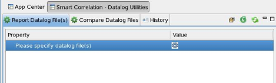

Smart Correlation - Datalog Utilities
Smart Correlation - Datalog Utilities is a GUI tool to help you analyze, report and compare data log files.
There are two independent functions in this module:
Click the corresponding tab to select the function you need.
Click the History tab to view the recently created reports.

Functional changes
- Introduced in SmarTest 7.3.2